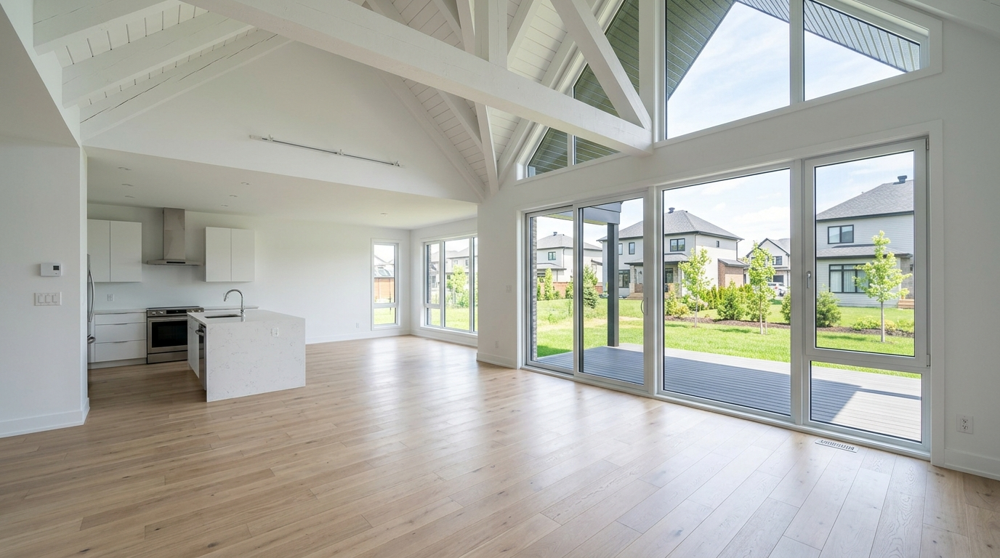
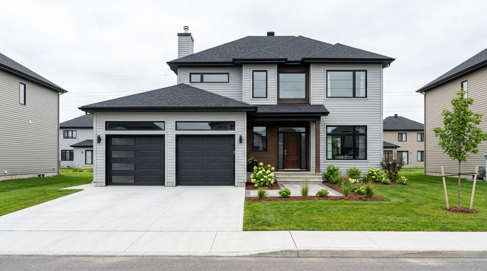
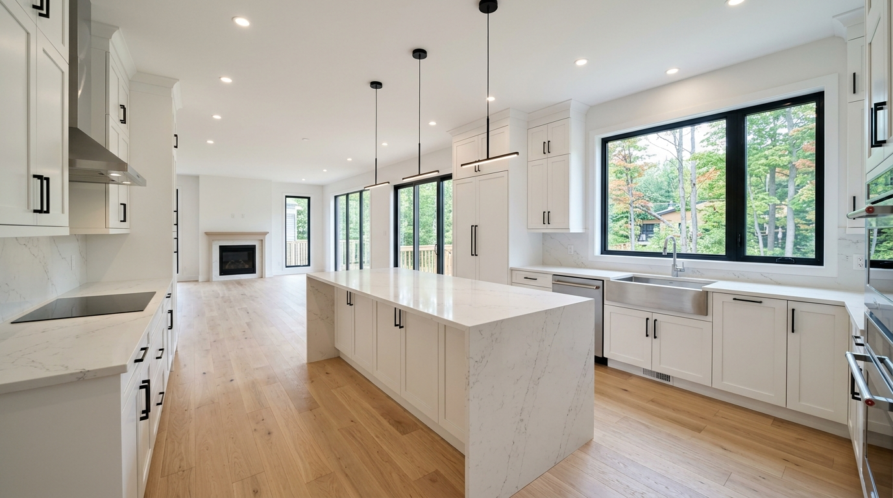
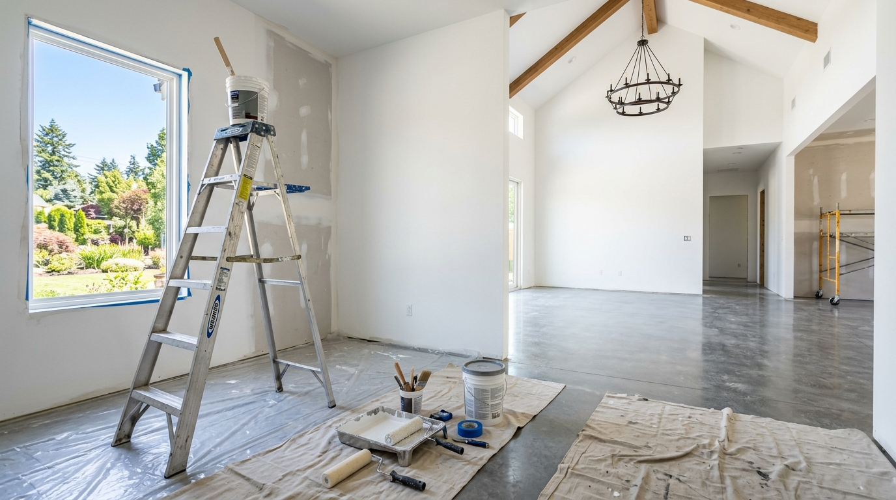
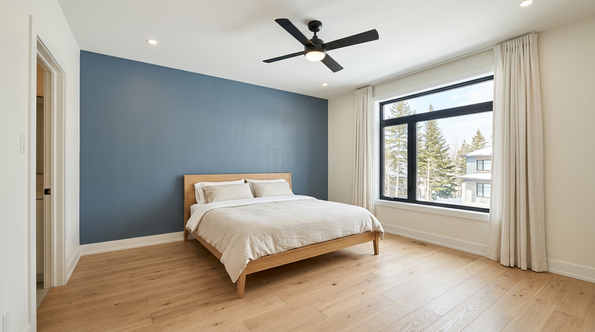
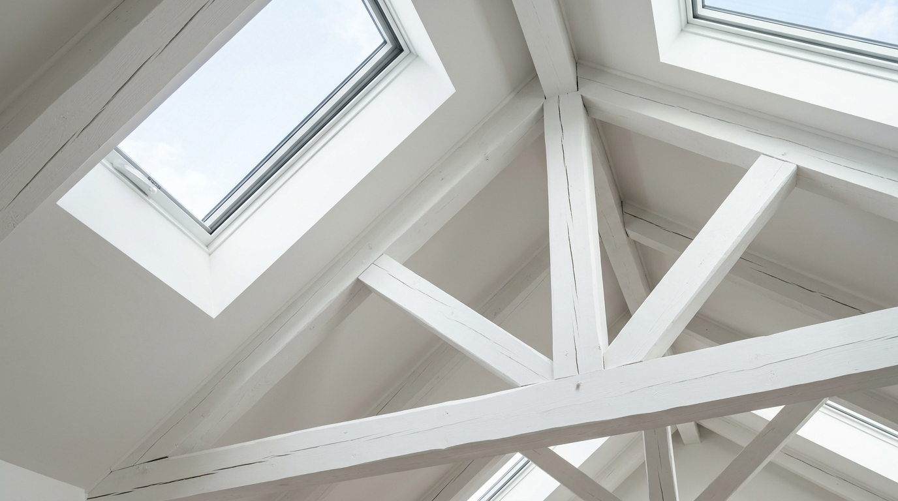
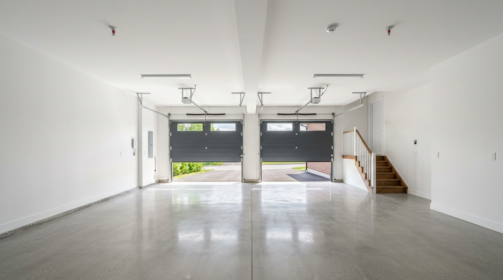

Livraison & inspection
Vous prenez possession. On passe une première visite pour relever les surfaces, mesurer au laser et noter les zones critiques (plafonds, escaliers, garage).
- Relevé au laser
- Test d'humidité
- Plan de chantier
Peinture en bâtiment · Mirabel · QC
On planifie votre peinture autour de la livraison du constructeur, on travaille les grands volumes au mètre carré, et on garantit la finition par écrit. Maisons neuves de Saint-Augustin, Saint-Janvier, Saint-Canut ou rénovations majeures — l'approche est la même : méthode, mesure, propreté.

01 — Étapes post-construction
Une maison neuve à Mirabel ne se peint pas comme un ravalement. Le gypse a besoin de sécher, les joints de bouger, l'humidité de se stabiliser. Voici comment on séquence le tout pour éviter les fissures et obtenir un fini durable.
Vous prenez possession. On passe une première visite pour relever les surfaces, mesurer au laser et noter les zones critiques (plafonds, escaliers, garage).
On laisse la maison se réguler. Pendant ce temps, vous choisissez les couleurs avec nos planches testées chez vous selon la lumière de Mirabel (orientation, fenêtres).
On rebouche les fissures de retrait apparues, on calfeutre les joints mobiles, on ponce les surimpressions de plâtre, on apprête l'ensemble du gypse neuf.
Deux couches en règle. Plafonds d'abord, murs ensuite, boiseries en dernier. Plateformes ou échafaudages pour les hauteurs. Inspection au crayon avant la dernière journée.
02 — Volumes traités
Pour une maison unifamiliale neuve typique de Mirabel (étage principal + étage des chambres + sous-sol fini).
Mesurée du plancher au faîte. On opère en plateforme jusqu'à 6 m, en échafaudage au-delà.
Entre la mobilisation et la livraison, pour une maison neuve standard avec deux couleurs principales et boiseries.
Stockés en entrepôt climatisé, achetés en vrac chez nos fournisseurs Bétonel et Dulux pour garantir la cohérence des lots.
03 — Réalisations






04 — Process technique
Visite sur place, mesure au laser pièce par pièce, photos numériques, devis chiffré au m² avec ventilation des produits, de la main-d'œuvre et des frais de protection.
Test d'humidité, calfeutrage des joints mobiles, sablage des surimpressions, masquage des cadres et planchers, apprêt scellant sur tout le gypse neuf.
Plafonds d'abord, murs ensuite, boiseries en dernier. Deux couches systématiques. Échafaudages pour cathédrales et cages d'escalier. Lampes d'inspection en fin de journée.
Inspection conjointe avec vous, retouches sur place, remise des fiches de produits utilisés (lots, codes couleur), garantie écrite de deux ans signée.
05 — Zones desservies
Nous couvrons l'ensemble du territoire de la ville fusionnée, des nouveaux développements de Saint-Augustin aux secteurs établis de Sainte-Scholastique.
06 — Études de cas
Saint-Augustin · 2025-03
Livraison hivernale, taux d'humidité élevé. On a installé deux déshumidificateurs pendant 72 h avant l'apprêt, puis appliqué deux couches sur 5 jours. Aucune fissure de retour à 8 mois.
Domaine du Parc · 2024-11
Volume total à plafond : 38 m². Échafaudage roulant trois niveaux, peinture mate anti-coulure appliquée au rouleau extension. Une seule journée pour le plafond, deux pour le reste de la pièce.
Saint-Janvier · 2025-01
Reprise de gypse + peinture sur trois pièces. Apprêt bloqueur de tache, deux couches sur murs et plafonds, raccord invisible avec l'existant. Livré en 4 jours.
07 — FAQ technique
On recommande au minimum 30 jours, le temps que les joints de gypse achèvent leur séchage initial et que le taux d'humidité se stabilise entre 35 et 45%. En hiver, on rallonge si la maison vient juste d'être chauffée.
Oui. On utilise des plateformes mobiles jusqu'à 6 m et des échafaudages roulants au-delà. Rouleaux à manche télescopique avec peinture spécifique anti-coulure pour les plafonds.
Garantie écrite de deux ans sur l'application. Les fissures de retrait dues au tassement de la maison sont retouchées sans frais durant la première année.
Bétonel Aura ou Diamond Vogel sur les murs, peinture mate spéciale plafonds, satin lavable sur boiseries. Tous les produits sont à faible teneur en COV pour la qualité de l'air dans une maison neuve.
L'intérieur, oui, toute l'année. L'extérieur se planifie entre la mi-mai et la mi-octobre selon les températures recommandées par les fabricants (au-dessus de 10°C, hors humidité forte).
Oui. On peut récupérer les plans, dialoguer avec votre entrepreneur général pour le timing, et intervenir avant ou après votre prise de possession selon votre préférence.
Visite gratuite sur place, mesure au laser de chaque pièce, photos. Devis numérique remis sous 48h, ventilé en main-d'œuvre, produits, échafaudages et frais de protection.
Oui, surtout les rénovations majeures après dégât d'eau, ouverture de mur, ajout d'extension. Notre approche post-construction s'applique aussi aux surfaces fraîchement reconstruites.
08 — Calculer mon chantier
Donnez-nous quelques mesures approximatives et l'état de votre maison. On vous rappelle dans la journée pour fixer la visite, mesurer au laser, et chiffrer chaque pièce.